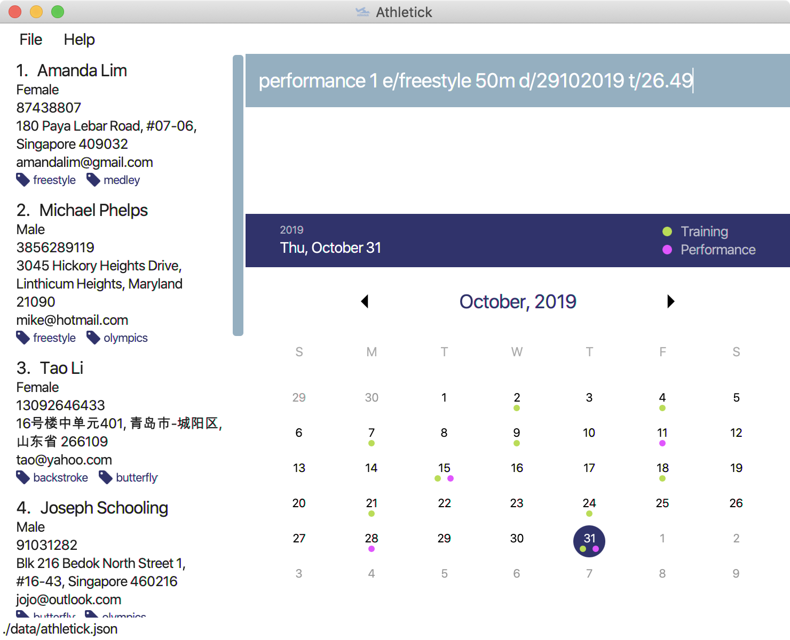

By: CS2103T-T12-3 Since: Sep 2019 Licence: MIT
1. Introduction
Athletick is a team management app for team captains or coaches for timing-based sports. Athletic supports storing of team members' personal details, attendance tracking and performance recording. More importantly, Athletick is optimized for those who prefer to work with a Command Line Interface (CLI), while still having the benefits of a Graphical User Interface (GUI). If you can type fast, Athletick can get your team management tasks done faster than traditional GUI applications.
Ready to let us help you to manage your team? Continue reading to find out more!
2. About
This document shows you the full list of features in Athletick.
Note the following symbols and formatting used in this document
| IMPORTANT |
This symbol indicates important information |
mark-up
|
A grey highlight (called a mark-up) indicates that this is a command that can be typed into the command line and executed by the application. |
3. Quick Start
-
Ensure you have Java
11or above installed in your Computer. -
Download the latest
athletick.jarhere. -
Copy the downloaded file to the folder you want to use as the home folder for your Athletick.
-
Double-click the file to start the app. The GUI should appear in a few seconds.
 -
Type the command in the command box and press Enter to execute it.
e.g. typinghelpand pressing Enter will open the help window. -
Refer to Section 4, “Features” for details of each command.
4. Features
Command Format
-
Words in
UPPER_CASEare the parameters to be supplied by the user e.g. inadd n/NAME,NAMEis a parameter which can be used asadd n/John Doe. -
Items in square brackets are optional e.g
n/NAME [t/TAG]can be used asn/John Doe t/friendor asn/John Doe. -
Items with
… after them can be used multiple times including zero times e.g.[t/TAG]…can be used ast/friend,t/friend t/familyetc. -
Parameters can be in any order e.g. if the command specifies
n/NAME p/PHONE_NUMBER,p/PHONE_NUMBER n/NAMEis also acceptable.
4.1. Team Data Entry
4.1.1. Adding an athlete : add
This command adds an athlete to Athletick.
What you should do
Type the athlete’s particulars in the format given below.
Format : add n/NAME p/PHONE e/EMAIL a/ADDRESS [t/TAG]…
Example: add n/John Doe p/98765432 e/johnd@example.com a/311, Clementi Ave 2, #02-25 t/backstroke
What you should see

If successfully added, the details of the added athlete will be displayed in the result box.
The athlete will be shown in team list.
4.1.2. Deleting an athlete : delete
This command deletes an athlete from the list by their index.
What you should do
Type the delete command, followed by the index of the athlete you wish to delete from Athletick.
Format: delete INDEX
Example: delete 7
| The index refers to the index number shown in the displayed person list. |
| ️The index must be a positive integer 1, 2, 3, … |
What you should see

If successfully removed, the details of the removed athlete will be displayed in the result box.
The athlete should no longer be shown in the team list.
4.1.3. Editing an athlete : edit
This command edits the details of an existing athlete in Athletick.
All the details of an athlete (name, phone number, email, address, tags) can be edited.
What you should do
Type the edit command in the following format, using the relevant prefixes to edit the appropriate details.
Format: edit INDEX n/[NAME] p/[PHONE] e/[EMAIL] a/[ADDRESS] t/[TAGS]
In order to edit Roy Balakrishnan’s name to Shawn, type in the following.
Example: edit 6 n/Shawn
| The index refers to the index number shown in the displayed person list. |
| The index must be a positive integer 1, 2, 3, … |
| At least one of the optional field must be provided. |
| When editing tags, the existing tags of the person will be removed i.e adding of tags is not cumulative. |
You can remove all the person’s tags by typing t/ without specifying any tags after it.
|
What you should see
If successfully edited, the edited information of Roy (now Shawn) will be displayed in the result box.
The team list should also reflect Roy’s new details.
4.2. Performance
4.2.1. Adding an event : event
This command adds an event to Athletick, and will be used for storing your athletes’ performances.
What you should do
Type the event command in the following format.
Format : event NAME_OF_EVENT
Example: event 50m freestyle
Event names are case-insensitive (eg. 50m freestyle and 50M freestyle are considered the same
events)
|
What you should see

If successfully added, the event name will be displayed in the result box.
4.2.2. Recording an athlete’s performance : performance
This command adds your athlete’s performance for a certain event, on a certain day, to Athletick.
You will need the event name, athlete’s index, date of performance and timing of performance.
What you should do
Type in the command in the following format.
Format : performance INDEX e/EVENT_NAME d/DDMMYYYY t/TIMING
Example : event 5 e/50m freestyle d/22102019 t/24s
| The event has to be created first. Otherwise, Athletick will prompt you to create that event. |
What you should see

The performance details will be displayed in the result box.
4.3. Training
4.3.1. Taking attendance of a training session by athletes present : training
This command adds a training session on the specified day to Athletick.
What you should do
Type in the training command, followed by the indexes of athletes who attended.
Format : attendance INDEX [INDEX] [INDEX ] …
Examples : training 1 2 3 5 9
What you should see
4.3.2. Taking attendance of a training session by members absent : training -a
This command adds a training session on the specified day to Athletick.
What you should do
Type in the training command, followed by the indexes of players who were absent.
Format : attendance -a INDEX [INDEX] [INDEX ] …
Examples : training -a 2 4
What you will see
4.4. Athlete Management
4.4.1. Viewing more details of a team member : select
This command shows you details of a specific athlete.
What you should do
Type in the command in the following format.
Format : select INDEX
Example : select 1
What you should see

The message “person selected!” will be displayed in the result box to indicate that you have selected the person.
In the feature box, all the information of the athlete will be displayed as shown.
4.4.2. Viewing calendar displaying training and performance entries : view calendar
This command displays calendar which indicates days with training or performance entries.
What you should do
Type in the following command and press enter.
Format : view calendar
What you should see

The result box will inform you that you are currently viewing your calendar.
The feature box will display the calendar feature.
Header 1 displays today’s day and date.
Header 2 displays the month and year you are currently viewing.
You may use the left and right buttons to navigate to a different month. In the calendar, days with training entries are marked with an orange circle, and days with performance entries are marked with a purple circle.
4.4.3. Sorting athletes alphabetically : sort
This command sorts your athletes alphabetically by their name.
What you should do
Type in the following command and press enter.
Format : sort
| This command will change your athletes’ index numbers. |
What you should see


The athlete list in the left sidebar should be alphabetically listed now.
4.4.4. Filtering athletes by their tags : filter
This command filters your athletes based on their tags.
What you should do
Type in the filter command, followed by the tag that you want to filter by.
Format : filter TAG
Example: filter butterfly
| This command will change your athletes’ index numbers. |
This command is case-insensitive, so filtering by captain and Captain will give the same result.
|
What you should see

The athlete list in the left sidebar should only display athletes that contain the specified tag.
4.4.5. Finding athletes by their name : find
This command find athletes whose name contains any of the given keywords.
What you should do
Type in the find command, followed by the keywords you want to find.
Format : find KEYWORD [MORE_KEYWORDS]
Example : find irfan
| This command will change your athletes’ index numbers. |
This command is case-insensitive, so finding by Irfan and irfan will give the same result.
|
What you should see

The athlete list in the left sidebar should only display athletes whose names contain the given keywords.
4.5. Miscellaneous
4.5.1. Clear all data : clear
This command clears all the existing data in Athletick.
It deletes all players, trainings, attendance, events and performances.
What you should do
Type the clear command.
Format : clear
What you should see
The following prompt will show if data was successfully cleared.
4.5.2. Get help on how to use Athletick: help
This command provides a user guide for Athletick.
What you should do
Type the help command.
Format: help
What you should see

A pop up box will appear, with a link to the user guide on Athletick.
4.5.3. Undoing a previous command : undo
This command restores Athletick to the state before the previous command was executed.
Let’s say you have accidentally deleted an athlete’s contact (Mohamad Ali) from your list.
Instead of having to re-enter Mohamad Ali’s contact information all over again,
you can easily restore all of Mohamad Ali’s details by undo-ing the delete command that you have just entered.
What you should do
Type undo into the command box, and press Enter to execute it.
Format : undo
What you should see
The result box will display the message “Undo Command Success!” and you can check that Mohamad Ali’s contact information is visible in the list again!
Take note that the undo feature only applies to undoable commands.
Undoable commands include: add, delete, edit, clear, attendance and training.
|
The undo command will not be able to undo commands that cannot be undone.
Let’s say you have executed a list command to list out all the athletes information in Athletick.
If you were to execute the undo command now, the undo command will fail because list is not an undoable command,
and that no doable commands were executed before this.
|
The undo command reverses previous commands in reverse chronological order.
Let’s say you have executed the edit command, followed by the delete command.
Executing undo now will first reverse the delete command.
Executing undo again will reverse the edit command.
|
The undo command will reverse the latest command that can be undone.
Let’s say you have executed the delete command, followed by the list command.
Since list command is not an undoable command, executing undo now will thus reverse the delete command.
|
4.5.4. Redoing an undo command : redo
This command reverses the most recent undo command.
Let’s say you have executed the delete command to delete Mohamad Ali from your list.
You may undo this action and restore Mohamad Ali’s information by executing the undo command. (See Undoing a previous command.)
Then, if you decide that you want the contact to remain deleted after all,
you may very quickly do so by executing the redo command to reverse the undo command that you had just executed.
What you should do
Type redo into the command box, and press Enter to execute it.
Format : redo
What you should see
The result box will display the message “Redo success!” and Mohamad Ali is once again gone from the list!
The redo command can only reverses the undo command.
Let’s say that you have executed the delete command to delete an athlete in your list.
Executing the redo command now will fail because no undo command was executed before this.
|
The redo command reverses previous undo commands in reverse chronological order.
Let’s say that you have executed the clear command, followed by the add command.
Executing the undo command now will reverse the add command.
Executing the undo command again will reverse the clear command as well.
Following this, executing the redo command will reverse the last undo command and reapply the clear command.
Executing the redo command again will reverse the second-last undo command and reapply the add command.
|
4.7. Saving the data
Address book data are saved in the hard disk automatically after any command that changes the data.
There is no need to save manually.
5. FAQ
Q: How do I transfer my data to another Computer?
A: Install the app in the other computer and overwrite the empty data file it creates with the file that contains the data of your previous Address Book folder.
6. Command Summary
| Add athlete |
|
| Delete athlete |
|
| Edit athlete |
|
| Add event |
|
| Record performance |
|
| Take attendance (by present) |
|
| Take attendance (by absent) |
|
| View athlete details |
|
| View calendar |
|
| Sort athletes |
|
| Filter athletes |
|
| Find athletes |
|
| Clear data |
|
| Get help |
|
| Undo |
|
| Redo |
|